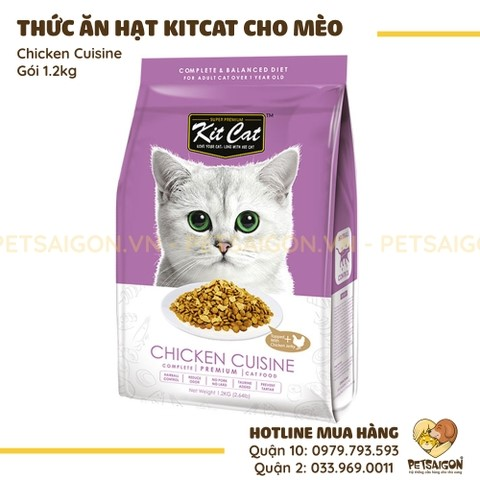

Thức Ăn Hạt Cho Mèo KitCat

Mô Tả
Thức Ăn Cho Mèo - Thức Ăn Hạt Kitcat được sản xuất và đóng gói theo quy chuẩn quốc tế, thành phần của thức ăn được chế biến từ những nguồn nguyên liệu chọn lọc và cao cấp. Thức ăn sẽ là nguồn dinh dưỡng cân đối và lành mạnh nhất để mèo có thể phát triển hoàn thiện.
Công thức của Thức ăn hạt khô Kit Cat được nghiên cứu và sản xuất theo quy chuẩn quốc tế nên có hàm lượng tỷ lệ các loại axit béo, omega 3 và 6 cân bằng nhất, tốt cho hệ tiêu hóa, phòng ngừa các bệnh về tim mạch và ngoài ra còn dưỡng cho da, lông của mèo luôn khỏe mạnh.
Thành phần dinh dưỡng
Thành phần dinh dưỡng của thức ăn cho mèo Kitcat dạng khô bao gồm: Ngũ cốc nguyên hạt (bắp và gạo), bột phụ phẩm từ gia cầm, đạm thực vật (đậu nành và bắp), bột cá, sắn, mỡ gà, men bia, bột tiêu hóa cá, bột tôm, bột phụ phẩm từ mực, muối iot, taurine, vitamin, khoáng chất, chất chống oxy hóa (bha & bht).